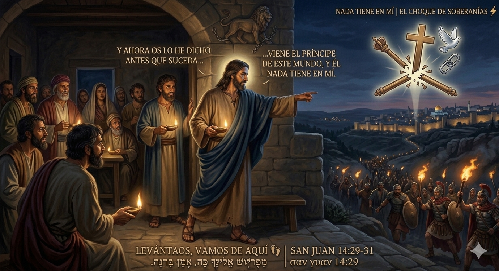

El lugar donde tu tormento se transforma en testimonio.
Bienvenidos a Casa Necesito OraciónSomos una comunidad de fe en Palmdale, California, que cree en el poder de la restauración total. No nos importa tu pasado, nos importa tu futuro con Dios.
Mantente conectado y participa con nosotros este mes.
Le informamos a toda nuestra comunidad que no tendremos servicio en observancia al Día de los Caídos (Memorial Day).
Te invitamos a nuestro servicio regular de la semana de 7:00 PM a 9:00 PM. Un tiempo para buscar a Dios en comunidad.
A veces la vida nos paraliza y el dolor de la espera se vuelve insoportable. Pero la parálisis no es tu final. Dios está moviéndose en la vida de su iglesia y quiere traerte de vuelta a un lugar de paz.
El evangelio no es una religión de cargas, es un camino de libertad. Jesús pagó el precio para sanar cada herida profunda. Si estás listo para experimentar una transformación real, hoy es el día para dar el primer paso.

En los momentos de mayor tensión en el aposento alto, Jesús rompe la pasividad y decide marchar voluntariamente hacia el choque más importante de la historia humana. Sabiendo de antemano que Judas lo entregaría, el Mesías esperado (aquel que se identificó ante la mujer samaritana diciendo "Yo soy, el que habla contigo" en Juan 4:26) se pone en movimiento. Su obediencia no es pasiva: es un paso al frente hacia la tormenta.
Jesús anticipa su muerte y padecimiento no para desanimar a sus discípulos, sino para blindar su fe. La cruz no fue un accidente del destino ni una sorpresa de última hora; fue un diseño soberano. Al cumplirse con exactitud lo profetizado, la fe de la Iglesia se consolida en la soberanía de Dios.
El texto aclara que viene el "príncipe de este mundo" (Satanás operando a través de los sistemas religiosos y políticos de la época), pero de inmediato establece una verdad clave: el enemigo nada tiene en Jesús, no tiene poder ni autoridad legal sobre el Mesías. Al estar completamente libre de pecado, Cristo no muere por un castigo propio, sino como un sacrificio voluntario, sustitutivo y perfecto por la humanidad.
La entrega de Jesús es la demostración pública de su amor y sumisión absoluta al Padre. A diferencia de las posturas a medias o las indecisiones humanas que buscan proteger intereses personales, Jesús ordena: "Levantaos, vamos de aquí". La teología se traduce en acción y se dirige hacia el cumplimiento del plan redentor.
Al salir del aposento alto, el destino directo de Jesús es el Huerto de Getsemaní. En arameo, Getsemaní significa "Prensa de Aceite" o "Lagar de Aceite", haciendo alusión al proceso industrial de la época donde las aceitunas eran sometidas a una presión brutal bajo pesadas vigas de madera para extraer su aceite virgen.
Creemos firmemente que la oración activa el poder sobrenatural de Dios. Nadie debería cargar con sus aflicciones a solas. Escribe tu petición abajo; nuestro equipo pastoral e intercesores estarán clamando por tu restauración total, tu familia y tus necesidades esta misma semana.
César Contreras
Hno. Henry Banderas
9:00 AM — Servicio Principal y Escuela Dominical
7:30 PM — Servicio de Intercesión Profunda
Nos encantaría recibirte en persona. Si tienes preguntas sobre nuestra comunidad, no dudes en escribirnos o visitarnos.